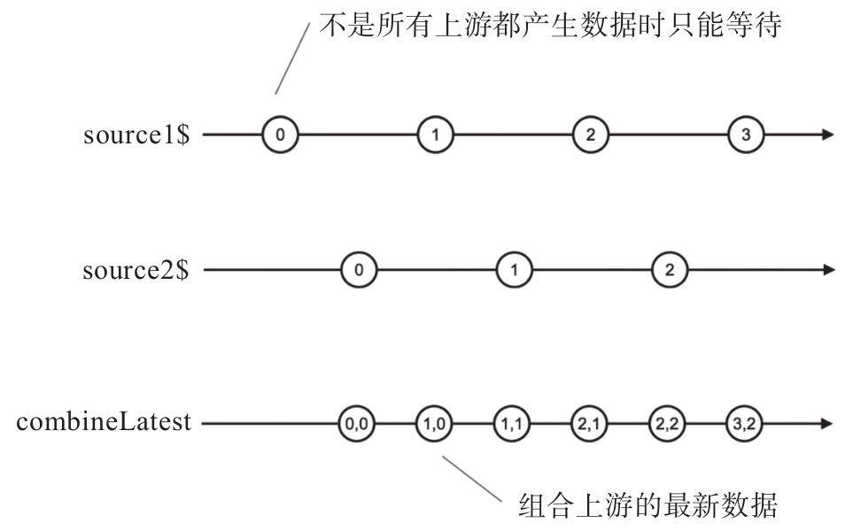
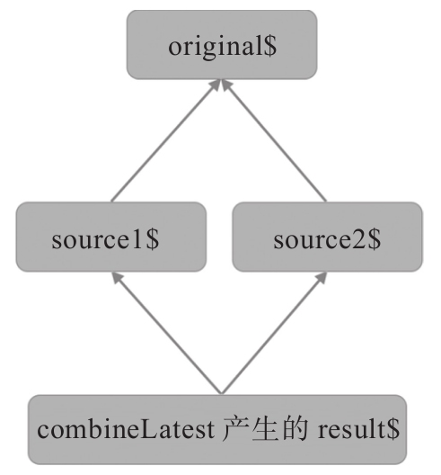
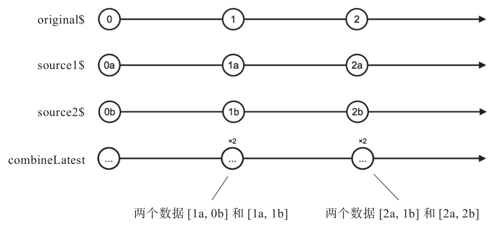

combineLatest合并数据流的方式是当任何一个上游Observable产生数据时，从所有输入Observable对象中拿最后一次产生的数据（最新数据），然后把这些数据组合起来传给下游。注意，这种方式和zip不一样，zip对上游数据只使用一次，用过一个数据之后就不会再用，但是combineLatest可能会反复使用上游产生的最新数据，只要上游不产生新的数据，那combineLatest就会反复使用这个上游最后一次产生的数据。
打个比方，combineLatest就像实时气象播报员，只要有新的天气变化情况，他就要把消息广播出去。简单起见，假如天气情况只包含气温和风向风级，但是测量气温和测量风向风级是两个不同的设备，所以有两个信息源。每当气温变化的时候，或者风向风级发生变化的时候，气象播报员（也就是combineLatest）就会收到一个通知，这时候气象播报员有责任发出综合的天气情况。如果是气温变化了，他应该在发出的天气情况中包含最新的气温，可是风向和风级这时候还没有变化呢，气象播报员有责任在每次播报中都包含气温和风向风级的信息，这时候他当然把上一次的风向风级信息一起播报出去。
这就是combineLatest的基本工作方式，组合（combine）最新的（latest）的数据。combineLatest同样有静态操作符和实例操作符两种形式，下面是使用实例操作符的代码：
import {Observable} from 'rxjs/Observable';
import 'rxjs/add/observable/timer';
import 'rxjs/add/operator/combineLatest';
import 'rxjs/add/operator/map';
const source1$ = Observable.timer(500, 1000);
const source2$ = Observable.timer(1000, 1000);
const result$ = source1$.combineLatest(source2$);
result$.subscribe(
console.log,
null,
() => console.log('complete')
);
我们使用了timer这个操作符，让source1$和source2$虽然都是间隔1000毫秒产生数据，起跑的时间却相差了500毫秒，这样产生的数据正好从时间上错开。
上面的程序运行每隔500毫秒会产生一行输出，如下所示：
[ 0, 0 ] [ 1, 0 ] [ 1, 1 ] [ 2, 1 ] [ 2, 2 ] [ 3, 2 ]
可以看到，combineLatest产生的Observable对象会生成数组数据。每个数组中元素的个数和上游Observable数量相同，每个元素的下标和对应数据源在combineLatest中的参数位置一致。在上面的代码中，我们使用的是combineLatest的实例操作符，所以，第一个数组元素来自于调用了combineLatest的Observable对象，第二个元素来自于combineLatest的第一个参数；如果使用静态操作符，那么第一个数组元素就会来自于combineLatest的第一个参数，第二个元素就会来自combineLatest的第二个参数。
值得注意的是，并不是说上游产生任何一个数据都会引发combineLatest给下游传一个数据，只要有一个上游数据源还没有产生数据，那么combineLatest也没有数据输出，因为凑不齐完整的数据集合，只能等待。
图5-6展示了combineLatest的弹珠图，当source1$产生第一个数据0时，source2$还没有产生数据，所以这个数据0不会引发combineLatest给下游的数据。但是，当source2$产生第一个数据之后，所有上游都有“最新数据”了，这时候无论source1$还是source2$产生数据，都会让combineLatest给下游传递一个数据。

图5-6 combineLatest的弹珠图
combineLatest产生的Observable何时完结呢？这一点上combineLatest又和zip不一样，单独某个上游Observable完结不会让combineLatest产生的Observable对象完结，因为当一个Observable对象完结之后，它依然有“最新数据”啊，就是它在完结之前产生的最后一个数据，combineLatest记着呢，还可以继续使用这个“最新数据”。只有当所有上游Observable对象都完结之后，combineLatest才会给下游一个complete信号，表示不会有任何数据更新了。
对上面的代码做一点修改，让source2$只吐出一个数据就完结，可以看到combineLatest对单个上游Observable完结的处理，代码如下：
const source1$ = Observable.timer(500, 1000);
const source2$ = Observable.of('a');
const result$ = source1$.combineLatest(source2$);
这样修改之后，程序的输出结果是这样。
[ 0, 'a' ] [ 1, 'a' ] [ 2, 'a' ] [ 3, 'a' ]
虽然source2$早早就完结了，但是combineLatest产生的result$不会完结，因为由timer产生的source1$不会完结，只要source1$持续产生数据，那combineLatest就会持续拿source2$的最后一个数据字符串a去和source1$产生的新数据组合传给下游。
上面的代码例子中，上游都有包含异步产生数据的Observable对象，如果上游全部都是同步产生数据的Observable对象会怎样呢？结果可能会和你想象的不大一样。
我们修改source1$和source2$的定义，代码如下：
const source1$ = Observable.of('a', 'b', 'c');
const source2$ = Observable.of(1, 2, 3);
const result$ = source1$.combineLatest(source2$);
然后，程序会不带延迟地输出如下内容：
[ 'c', 1 ] [ 'c', 2 ] [ 'c', 3 ] complete
因为source1$和source2$最终都是完结的，所以上面的程序最终会输出complete，代表result$最终也会完结。不过，更有意思的是，我们看到虽然source1$和source2$各产生了6个数据，但是最终result$只产生了3个数据，看起来并不是上游每个数据都触发combineLatest下游的一个数据，而且，source1$只有最后一个数据字符串c被使用，而source2$则是3个数据都进入了下游，为什么会这样呢？
这是由combineLatest的工作方式决定的。combineLatest会顺序订阅所有上游的Observable对象，只有所有上游Observable对象都已经吐出数据了，才会给下游传递所有上游“最新数据”组合的数据。在上面的例子中，combineLatest的工作步骤如下：
1）combineLatest订阅source1$，不过，因为source1$是由of产生的同步数据流，在被订阅时就会吐出所有数据，最后一个吐出的数据是字符串c。
2）combineLatest订阅source2$。
3）source2$开始吐出数据，当吐出1时，和source1$的最后一个数据c组合传给下游。
4）source2$吐出2时，依然和source1$的最后一个数据c组合传给下游。
5）source2$吐出3时，还是和source1$的最后一个数据c组合传给下游。
可以注意到，source1$是同步数据流，当它产生数据时，combineLatest还没来得及去订阅source2$呢，所以，当combineLatest接下来去订阅source2$时，source1$的“最新数据”就是字符串c，这时候source2$虽然依然是同步数据流，但它每产生一个数据，都会有准备好的source1$“最新数据”。因此，source2$产生的每个数据都会引发下游一个数据的产生。
combineLatest和之前介绍的其他合并类操作符一样，可以支持超过两个Observable对象的合并。如果用combineLatest合并三个同步数据流会怎样呢？读者在往下看的时候可以先想一想。
下面是合并三个of产生的Observable对象的代码：
const source1$ = Observable.of('a', 'b', 'c');
const source2$ = Observable.of(1, 2, 3);
const source3$ = Observable.of('x', 'y');
const result$ = source1$.combineLatest(source2$, source3$);
程序的输出结果如下：
[ 'c', 3, 'x' ] [ 'c', 3, 'y' ] complete
没错！实际上只有最后一个参数source3$的所有数据进入了combineLatest的下游，排在前面的source1$和source2$都只有最后一个数据有幸进入下游，最终下游Observable对象的数据个数也是由source3$决定。归根结底，是因为source1$和source2$被订阅得早，它们吐出最后一个数据之前combineLatest都凑不齐所有参与Observable对象的“最新数据”。
了解combineLatest的工作原理，不难理解combineLatest所产生数据流的行为。
1.定制下游数据
如果combineLatest的输入只有Observable对象，那么传递给下游的数据就是一个包含所有上游“最新数据”的数组，但是，有时候这样并不方便，我们可能希望下游接收到的不是数组而是已经被真正“组合”过的数据。这时候，可以利用combineLatest的一个可选参数project。
combineLatest的最后一个参数可以是一个函数，这里我们称之为project，project的作用是让combineLatest把所有上游的“最新数据”扔给下游之前做一下组合处理，这样就可以不用传递一个数组下去，可以传递任何由“最新数据”产生的对象。project可以包含多个参数，每一个参数对应的是上游Observable的最新数据，project返回的结果就是combineLatest塞给下游的结果。
下面是使用project的示例代码：
const source1$ = Observable.timer(500, 1000);
const source2$ = Observable.timer(1000, 1000);
const project = (a, b) => `${a} and ${b}`;
const result$ = source1$.combineLatest(source2$, project);
其中，使用的project函数把两个参数组合为一个字符串，使用了ES6的字符串模板语法，最终程序输出如下：
0 and 0 1 and 0 1 and 1 2 and 1
可以看到，combineLatest输出不再是数组形式，而是由project决定的字符串。
上面的代码实际上等同于下面的代码：
const source1$ = Observable.timer(500, 1000);
const source2$ = Observable.timer(1000, 1000);
const project = (a, b) => `${a} and ${b}`;
const result$ = source1$.combineLatest(source2$)
.map(arr => project(...arr));
其中，没有在combineLatest的参数列表中直接使用project，而是利用map，配合ES6的扩展操作符，让combineLatest产生的数据根据project映射为我们想要的结果。
顺道提一下，zip和combineLatest一样默认输出的数据是数组形式，因此，zip也和combineLatest一样，可以利用最后一个函数参数来订制输出数据的形式。
2.多重依赖问题
在所有合并类操作符中，combineLatest有一个很特殊的问题，当上游数据来源有相互依赖时会产生意料不到的结果。
combineLatest产生的Observable对象数据依赖于上游的多个Observable对象，如果上游的多个Observable对象又共同依赖于另一个Observable对象，这就是多重（chong第2声）依赖问题，如图5-7所示。

图5-7 多重依赖关系示意图
图中箭头方向代表的是Observable对象的依赖方向，和数据的流向正好相反。
如果读者对C++编程语言有一些了解，看到这张图可能会觉得眼熟，因为C++支持多重继承，也就是一个类可以继承多个类，而这多个类又可能有共同的父类，这样类之间就有可能出现像上面一样的菱形依赖关系。多重继承可能会导致一些很反常识的问题，因为一个属性很难说清楚是从哪条关系继承下来的，所以在其他编程语言中往往放弃多重继承的功能。
和C++的多重继承容易引来麻烦一样，RxJS中这样数据流的多重依赖也会引来麻烦，让我们通过一个实际的例子来看这个问题，代码如下：
import {Observable} from 'rxjs/Observable';
import 'rxjs/add/observable/timer';
import 'rxjs/add/operator/combineLatest';
import 'rxjs/add/operator/map';
const original$ = Observable.timer(0, 1000);
const source1$ = original$.map(x => x+'a');
const source2$ = original$.map(x => x+'b');
const result$ = source1$.combineLatest(source2$);
result$.subscribe(
console.log,
null,
() => console.log('complete')
);
其中，orginal$利用timer每隔1000毫秒产生一个递增数值序列，然后source1$和source2$利用map产生对应的字符串，其中source1$会产生0a、1a、2a这样的序列，source2$会产生0b、1b、2b这样的序列。
看这段程序会有什么样的执行结果，程序启动的时候就会输出如下一行：
[ '0a', '0b' ]
这不难理解，因为combineLatest两个上游产生的数据就是这两个字符串。
接着，1秒钟之后，程序接着会输出下面两行：
[ '1a', '0b' ] [ '1a', '1b' ]
然后，又过了1秒钟，程序又会输出下面两行：
[ '2a', '1b' ] [ '2a', '2b' ]
程序的输出不会结束，但是读者可能看到问题在哪了，整个数据管道都由original$驱动，而original$每一秒钟只产生一个数据，但是在combineLatest之后却产生了两个数据。
直观上来说，当original$吐出数据1的时候，source1$会吐出1a，source2$会吐出1b，那么result$就会产生这样一个输出：
[ '1a', '1b' ]
当然，实际上我们得到了两个输出，虽然后一个输出和预期的一样，但是之前的那个输出却不是我们想要的，这就是多重依赖暴露出combineLatest的问题。
这种现象称为小缺陷（glitch），指的是combineLatest这样的操作符输出的不一致情况，glitch发生是因为多个上游Observable“同时”吐出一个数据，当然，并不是真正的“同时”，几个事件之间可能会间隔几纳秒的时间，但是因为它们是由同一个数据源（在上面的例子中就是original$）引发的，所以逻辑上算是“同时”。
图5-8展示的就是glitch现象的弹珠图。

图5-8 combineLatest的glitch现象
这种glitch现象被认为是RxJS的一个缺陷，函数响应式编程的原教旨主义由此认定RxJS不能算是真正的函数响应式编程 [1] ，按照完全正统的FRP的定义，那么上面的输出应该是这样：
[ '0a', '0b' ] [ '1a', '1b' ] [ '2a', '2b' ]
我们在这里不再去纠结RxJS算不算FRP，我们只说怎样解决这个问题，combineLatest只是按照它的职责在工作，如果想要有上面那样纯正的输出，我们只不过用错了操作符，这就需要引入RxJS中combineLatest的另一个兄弟withLatestFrom。
[1] 参见《Functional Reactive Programming》Section 6.4.1 Glitches in combineLatest。